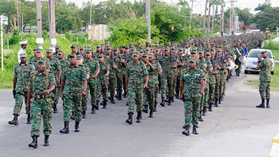

Work Experience
I am currently employed with the Guyana Defence Force. Joining the military has always been my dream ever since growing up....my inspiration was enhanced by my uncle who had served in the Force and who wanted me to join as well. I joined the GDF alittle after completing high school and I have been with them ever since. Looking back at my years spent in the Force I can confidently say the military renewed my dreams for the future and give me a structure in which to pursue my career plans. I know that being in the Force is important which is all that truly matters at the end of the day.
Whats Great About the Militay
Here are a few reasons why the milary is considered a great experience:
1. The Military Builds Character
I am aware that regardless of everything else that is going on in my life every month like clockwork there will be Base Muster and I have to ensure that I meet the standard for parade. Also I know I have to exercise and keep fit, since there will be a number of physical training exercises which will be conducted this year like every other year and as such its expected of me to excel at the grading standard. As such I need to be perfroming my personal physical training as well. So its safe to say that I attribute my physical fitness discipline in part to my time I have spent in the Force. I also learned teamwork, racial tolerance and brotherhood. Also I have to keep my grades up while here at the university since the Force expects no less of me. This alone will give me the motivation that is needed to go beyond my average effort.
2. The Culture is Diverse and Generally Accepting
In the Force no one’s white, black, brown, or anything in between; we’re all green, like the uniforms we wear every day. And in my experience, thus far, that statement has held up to being the truth. Here in the Force you are exposed different classes of people who have different cultural background. This speaks of the great impact of learning a variety of lifestyles about individuals which alone can impact your complete persception about everything that you might have known and hold to be truth. So, by being in the Force you learn and grow from different people experiences.
3. I Have a Purpose
In the early years of high school, I was adrift. So much was happening all at once, and way too quickly. Stress was causing me to fall short of my goals. To be honest, I felt like I wasn’t measuring up to my potential. Thats when my uncle explained to me what the military is all about when I really had no intentions of pursuing anything. But the more I learned about the GDF, the more I was intrigued and wanted to join.